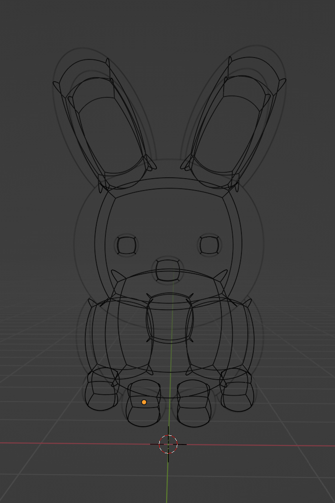
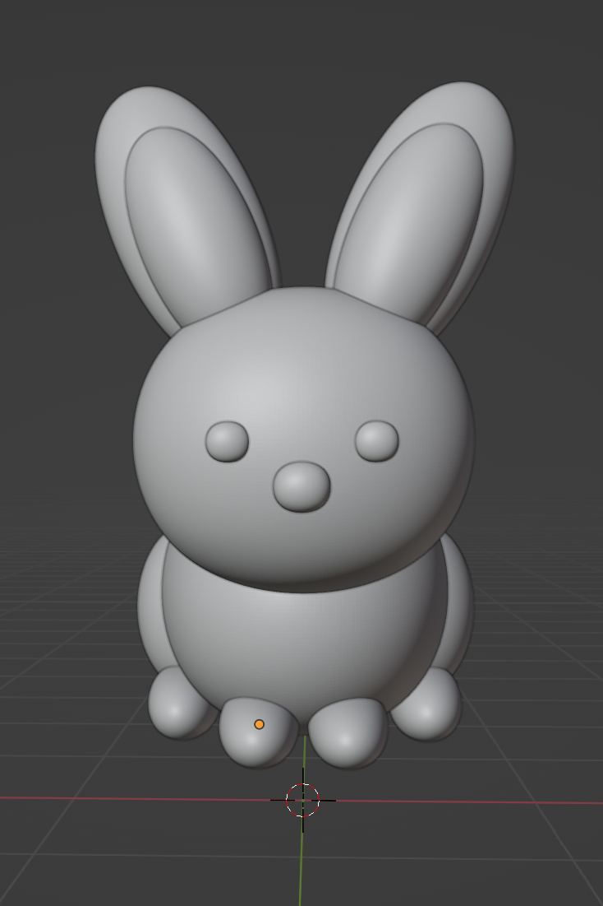
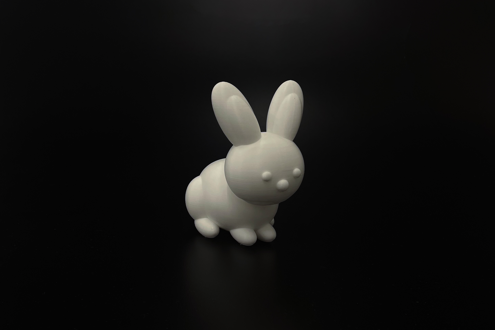
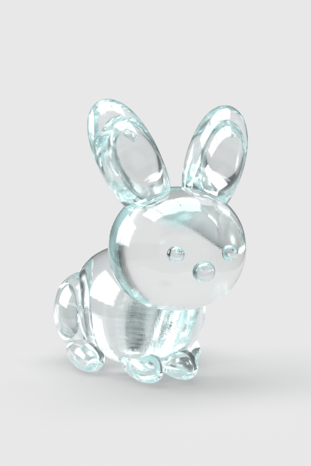
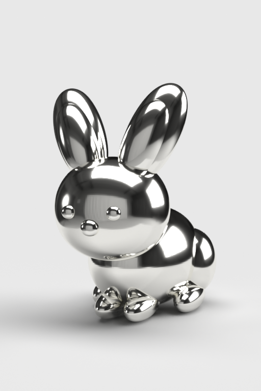
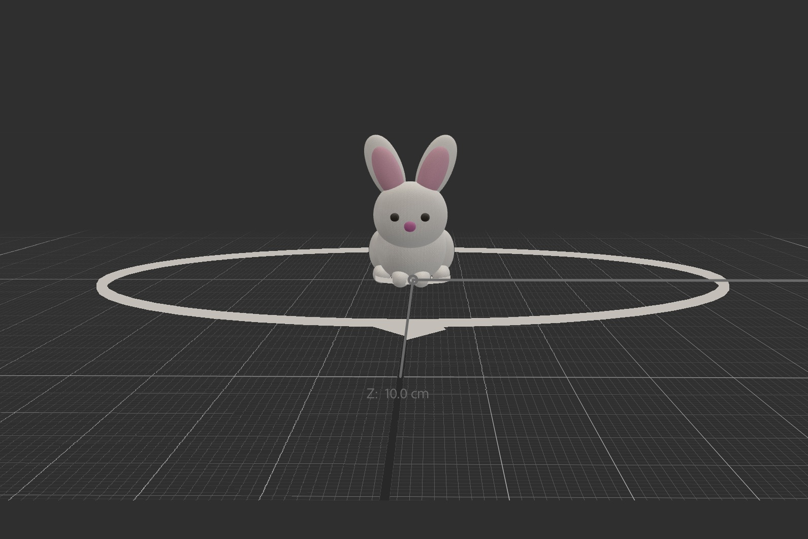

3D Modeling, Fabrication, Visualization, and Augmented Reality.


Wireframe
Crafted with precision and ingenuity, this 3D model was constructed in Blender,
exclusively constructed from 10 layers of scaled spheres. It is simple, yet elegant.

Rapid Prototyping
Having perfected the digital model, the moment arrived for
the transformation into a tangible entity through precision 3D printing.
Texture & Visualization
An array of digital prototypes has been crafted, only using premium materials
such as pristine glass, refined silver, luxurious fabrics, and supple leather.
This integration is facilitated through Adobe Photoshop, Adobe Dimension, Adobe Substance 3D Stager, and Blender.


Aero
Following the process of texturizing the prototypes, they are seamlessly exported to Adobe Aero.
This virtual reality software allows users' to share their three-dimensional creations with ease and innovation.

Augmented Reality
The prototype is now scalable on users' mobile devices to appear as though it exists off screen.